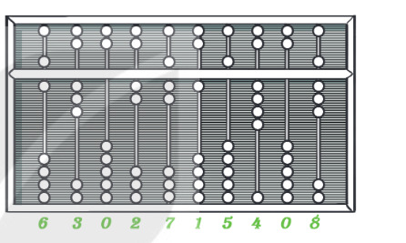
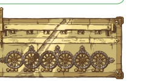
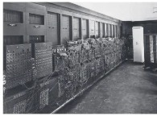

Dành cho giáo viên
Theo dõi lớp
| Học sinh / Nhóm | Đã nộp | Cập nhật |
|---|
Bước 1
1 Khởi động
Khám phá Hình ảnh khởi động
Trò chuyện Cùng An, Minh và Khoa
Đoạn trò chuyện gợi mở (không có trong SGK)
Minh: Hồi nhỏ tớ toàn đếm bằng ngón tay. Đó là “máy tính” đầu tiên của tớ đấy!
An: Người xưa cũng vậy! Trong tiếng Anh, “digit” (chữ số) bắt nguồn từ chữ Latin nghĩa là ngón tay.
Khoa: Ông tớ còn giữ một chiếc bàn tính gảy hạt, nghe nói có từ hơn 2000 năm trước Công nguyên.
Minh: Từ ngón tay, bàn tính đến máy tính bây giờ, con người đã đi qua những bước nào nhỉ?
An: Người xưa cũng vậy! Trong tiếng Anh, “digit” (chữ số) bắt nguồn từ chữ Latin nghĩa là ngón tay.
Khoa: Ông tớ còn giữ một chiếc bàn tính gảy hạt, nghe nói có từ hơn 2000 năm trước Công nguyên.
Minh: Từ ngón tay, bàn tính đến máy tính bây giờ, con người đã đi qua những bước nào nhỉ?
Khởi động Công cụ tính toán đầu tiên
Các phép tính đầu tiên được con người thực hiện bằng cách sử dụng 10 ngón tay. Cho đến nay, hệ thống ghi số thập phân (cách ghi số sử dụng các chữ số từ 0 đến 9) vẫn là cách ghi số phổ biến hơn cả. Trong tiếng Anh, từ “chữ số” (digit) có nguồn gốc từ chữ digitus (trong tiếng Latin có nghĩa là ngón tay).
Bàn tính: Hơn 2000 năm trước Công nguyên, con người đã biết làm các phép tính số học. Một trong những công cụ tính toán sớm nhất là bàn tính (Hình 1.1).
Bàn tính: Hơn 2000 năm trước Công nguyên, con người đã biết làm các phép tính số học. Một trong những công cụ tính toán sớm nhất là bàn tính (Hình 1.1).

Ghi bài Khởi động
Sau khi thầy cô chốt, em chép nội dung dưới đây vào vở.
Bước 2 · Hình thành kiến thức mới
2.1 Máy tính cơ học
Hoạt động 1 Sự ra đời của máy tính
Hầu hết mọi người nghĩ về máy tính như một thiết bị điện tử, có khả năng xử lí dữ liệu đa dạng với tốc độ cao và có dung lượng lưu trữ lớn. Em hãy tìm hiểu và trả lời các câu hỏi sau.
Đọc hiểu Những chiếc bánh răng và dự án của Babbage
Đọc mục 1 (SGK trang 5–6). Ý tưởng cơ giới hoá việc tính toán đóng vai trò quan trọng trong lịch sử phát triển của máy tính. Năm 1642, nhà bác học người Pháp Blaise Pascal, khi đó chưa đầy 20 tuổi, đã cho ra đời chiếc máy tính cơ học Pascaline (Hình 1.2) để giúp đỡ cha trong việc tính thuế. Sau Pascal, nhà Toán học người Đức Gottfried Leibniz đã cải tiến và thêm phép tính nhân, chia. Năm 1833, nhà Toán học người Anh Charles Babbage thiết kế và chế tạo những cỗ máy thực hiện việc tính toán một cách tự động; nguyên lí thiết kế máy của Babbage giống như máy tính ngày nay.

Ghi bài 1. Máy tính cơ học
Sau khi thầy cô chốt, em chép nội dung dưới đây vào vở.
Bước 2 · Hình thành kiến thức mới
2.2 Máy tính điện tử
Đọc hiểu Máy tính điện – cơ và kiến trúc Von Neumann
Đọc mục 2 (SGK trang 6–7). Năm 24 tuổi, Claude Shannon đã chỉ ra rằng có thể sử dụng các rơ le để thực hiện các thao tác tính toán trên các dãy bit. Năm 1943, Howard Aiken chế tạo thành công máy tính điều khiển tuần tự tự động, được giới thiệu ở Đại học Harvard năm 1944 với tên Harvard Mark I. Năm 1945, John Von Neumann trình bày nguyên lí “chương trình được lưu trữ”. Theo nguyên lí đó, máy tính cần được cấu tạo dựa trên kiến trúc Von Neumann (Hình 1.3).
Thiết bị vào→
Bộ xử lí ⇅ Bộ nhớ→
Thiết bị ra
Đọc hiểu Năm thế hệ máy tính điện tử
Trải qua nhiều giai đoạn, dựa trên những tiến bộ về công nghệ, máy tính điện tử có thể được phân chia thành năm thế hệ:
- Thế hệ thứ nhất (1945 – 1955): đèn điện tử chân không; bộ nhớ trống từ; kích thước rất lớn. Ví dụ: ENIAC (Hình 1.4).
- Thế hệ thứ hai (1955 – 1965): bóng bán dẫn; bộ nhớ lõi từ, băng từ. Ví dụ: IBM 7090, Minsk-22 (đưa vào nước ta năm 1968).
- Thế hệ thứ ba (1965 – 1974): mạch tích hợp (IC). Ví dụ: IBM System/360 (đưa vào nước ta năm 1967).
- Thế hệ thứ tư (1974 – 1990): mạch tích hợp cỡ rất lớn (VLSI) và bộ vi xử lí; bộ nhớ CD, RAM, ROM, USB, SSD. Ví dụ: Micral, IBM PC, Apple II.
- Thế hệ thứ năm (1990 – ngày nay): mạch tích hợp cỡ siêu lớn (ULSI), xử lí song song, trí tuệ nhân tạo. Ví dụ: điện thoại thông minh, loa thông minh, kính thông minh.

Câu hỏi SGK trang 8
Ghi bài 2. Máy tính điện tử
Sau khi thầy cô chốt, em chép nội dung dưới đây vào vở.
Bước 2 · Hình thành kiến thức mới
2.3 Máy tính thay đổi thế giới như thế nào?
Hoạt động 2 Sự thay đổi
Đọc hiểu Máy tính trong các lĩnh vực
Đọc mục 3 (SGK trang 9). Máy tính đã thay đổi thế giới theo nhiều cách. Đó là do máy tính có thể tiếp nhận mệnh lệnh của con người để hoạt động một cách bền bỉ, xử lí dữ liệu chính xác, với dung lượng lớn, tốc độ cao. Hơn thế, bằng cách rút ra những quy luật trong quá trình hoạt động, máy tính có thể tự thay đổi, trở nên thông minh hơn. Vì máy tính là công cụ hỗ trợ con người đắc lực, nên con người cần phải thay đổi hành vi của mình để thích nghi với môi trường mới.
Ghi bài 3. Máy tính thay đổi thế giới
Sau khi thầy cô chốt, em chép nội dung dưới đây vào vở.
Bước 3
3 Luyện tập
Gắn nhãn Ôn lại kiến thức bằng hình
Luyện tập Bài tập SGK trang 9
Ghi bài Luyện tập
Sau khi thầy cô chốt, em chép nội dung dưới đây vào vở.
Bước 4
4 Vận dụng
Vận dụng Máy tính ở Việt Nam và trong tương lai
Ghi bài Vận dụng
Sau khi thầy cô chốt, em chép nội dung dưới đây vào vở.